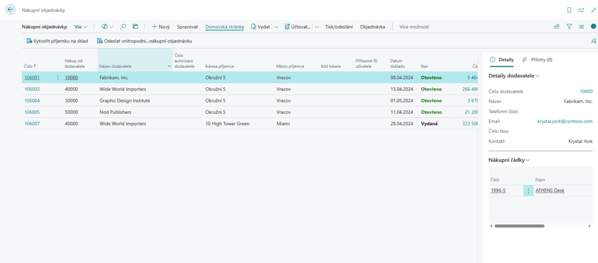
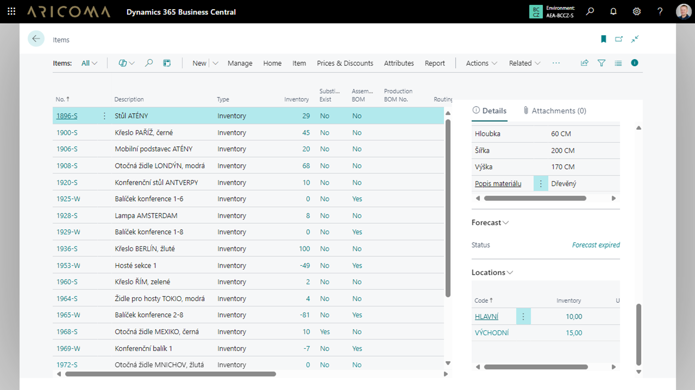
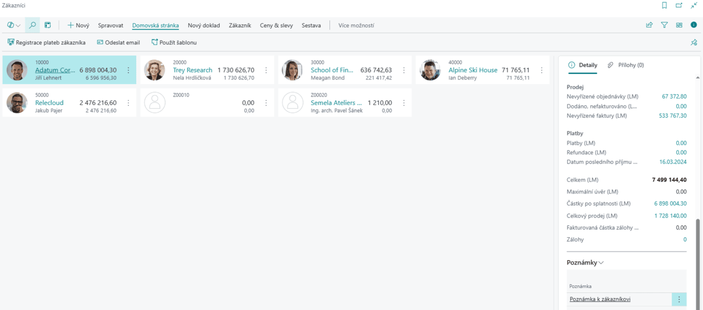

Byznys balíček (Business Pack)
Aktualizace: 1.7.2025
Business Pack rozšiřuje prostředí Microsoft Dynamics 365 Business Central o praktická, často používaná pole a přehledné infopanely přímo na klíčových stránkách systému. Uživatelům zajišťuje okamžitý přístup k důležitým informacím bez nutnosti ručního nastavování, zásahů do kódu či vlastního vývoje. Všechna relevantní data se zobrazují automaticky přesně tam, kde jsou potřeba.
Modul se zaměřuje výhradně na rozšíření existujících tabulek a stránek o užitečné informace, které usnadňují každodenní práci, zlepšují přehlednost a orientaci v systému. Výsledkem je úspora času a snížení chybovosti.
Business Pack je ideálním řešením pro firmy, které chtějí využít plný potenciál Business Central bez složitých úprav a nákladného vývoje.

Note
Veškerá pole a infopanely jsou po instalaci automaticky aktivní a viditelné na příslušných stránkách.
Přidaná pole
Rozšíření zahrnuje přehledně strukturovaná pole na těchto stránkách:
Prodejní doklady
- Prodejní objednávky: adresa a město příjemce, přislíbené datum dodávky, kód způsobu platby, IČO, DIČ, stav skladové dodávky.
- Zaúčtované prodejní dodávky: číslo původní objednávky, adresa a město příjemce, související faktury.
- Zaúčtované prodejní faktury: adresa a město příjemce, kód způsobu platby, seznam souvisejících dodávek.
Nákupní dokumenty
- Nákupní objednávky: adresa a město příjemce, číslo objednávky dodavatele, přislíbené datum příjmu, IČO, DIČ.
- Dodávky ze skladu / příjemky na sklad: číslo a název zákazníka, adresa příjemce, číslo objednávky a další logistické údaje.

Doklady Transferů
Efektivní řízení skladových přesunů vyžaduje přesné a dostupné informace přímo v místě, kde s nimi uživatel pracuje. Business Pack doplňuje řádky dokladů transferů o klíčová pole – číslo zboží, jeho popis, množství a měrnou jednotku.
Tato rozšíření zajišťují lepší přehled nad obsahem každého přesunu, zvyšují kontrolu nad prováděnými operacemi a přispívají ke snížení chybovosti při manipulaci se zbožím. Informace, které dříve vyžadovaly otevření dalších stránek nebo ruční dohledání, jsou nyní dostupné okamžitě a přehledně.
Karta zboží
Zobrazuje souhrnný přehled: číslo zboží, typ, poznámka, kusovník montáže, skladové zásoby, rezervace, dostupné množství, zboží na cestě, objednané i dodané množství, stav fakturace.

Nové informační panely (FactBox)
Business Pack přináší nové informační panely, které zlepšují přehlednost a zkracují dobu hledání dat. Umisťují se na klíčové stránky, jako jsou:
- Prodejní a nákupní objednávky
- Faktury a dodávky
- Karty zboží
Informační panel „Zásoby dle lokace“
Zobrazuje, na kterých skladových lokacích se konkrétní zboží nachází a v jakém množství. Přístupný je přímo na seznamu zboží i na jeho kartě.
Informační panely s řádky dokladů
Umožňují zobrazit jednotlivé položky (číslo zboží, popis, množství, měrná jednotka) přímo na stránkách objednávek – pro prodej i nákup.
Informační panely s poznámkami
- Poznámky k zákazníkovi: viditelné na stránkách Zákazníci a Zákazník, ale i na prodejních objednávkách, fakturách a vratkách.
- Poznámky k dokladům a dodávkám: zajišťují, že důležité interní informace jsou vždy po ruce.

Shrnutí
Business Pack přináší větší kontext, vyšší efektivitu a rychlejší orientaci v systému Microsoft Dynamics 365 Business Central – bez zásahu do kódu, bez vývoje a bez kompromisů.